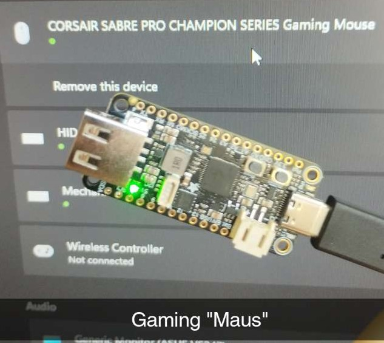

Projekt Idee
"Warum Cheaten alle WTF" -Zitat Ende
Inspiration
Interesants YT video
Planung
Brauche paar sachen
Durchführung
Es gibt Daten für Valorant mit Labels. Die waren aber komisch und nicht wirklich brauchbar.
dewegen habe ich gameplay aufgenommen hab durchgeskippt und alles gescreenshotted was brauchbar war.
nach wenigen 100 halbwegs einzigartigen Bildern musste ich anfangen zu annotieren.
Die Art des Labelings hat sich paar mal geändert.
Nach model training von YoloV11n auf kaagle auf 2 Nvidea Tesla P100 da es 80 gratis Stunden jede woche o.ä gab. Inzwischen gibt es nur 1 GPU und 30 Stunden was für ne kacke aber immer noch besser als colab

Weil ich offensichtlich mehr daten brauchte und gleichzeitig bessere qualität habe ich immer das derzeitige model zum annotiren benutzt um fehler auszubessern. Zeit sparen und Daten die jetzt schon perfekt erkannt werden nicht unnötig zum Datensatzt hinzufügen.
Als es gut genug war in onnx format und auf der cpu laufen lassen da ich nicht mit der amd gpu rumfummeln wollte. Kombiniert mit simplem screencapture, ui und bisschen Mausbewegung gab es den ersten Prototypen. Wenn ich diesen aber in Valorant nutzen würde wäre ich sofort gebannt oder es würde nicht funktionieren wegen der Mausbewegung per code. Also ganz schnell in Unity ne Box mit paar pngs die random auftauhen und nach einem click drauf verschwinden. Tests ohne Risiko.
mehrere probleme. Anvisierung ass, performance ass, aim ass, obb ass, aber funktioniert.
nächster schritt mausbewegung auf Hardware umsetzen.
adafruit rp2040 USB-A feather sollte gut sein mit 2 usb ports. (ist nicht gut).
tinyusb library wurde genutzt um alles in c zu schreiben. Es funktioniert mit seinen eigenen beispielen keine 5 minuten.
und man muss freertos verwenden zusätzlich damit der usb host nicht abstürzt. (Hat Monat gedauert es zum stabil zu kriegen und 6 monate später ist es immer noch nicht solved)
btw die docs sind auch nicht gut.
Die polling rate ist nidrig und der host/pc werden nicht gesynct und die polling rate wird immer schlechter dadurch.
yay arbeit die ich später machen werde.

Stand jetzt ist der anticheat von riot besser und deswegen sind die anforderungen erhöt.
mit meinem laptop für die uni wird ein 2 pc setup gemacht wo auf dem laptop das vision model läuft
mit screencapture vom desktop. der rp2040 wird zwischen den beiden geschaltet was den code simpler macht. vlt geht schnell doch noch.
Um die erkennung zu verbessern werden noch paar sachen gemacht:
Derzeitig kann ohne lan und neuen monitor die hälfte nicht gemacht werden. <--- bald da
Deswegen versuche ich herauszufinden wie ich das model auf ne amd (i)gpu kriege und was noch optimiert werden kann. ✅ kinda
Dannach wird der rp2040 komplett neu programmiert damit es mit 2 pc setup läuft.
Eine neue Anspruchsvollere testumgebung neu Aufbauen
Nachdem wird weiter am model gearbeitet. Ziel sind mind 1500 gute Bilder im datensatz.
wenn der datensatz fertig ist wird mit verschiedenen architekturen experimentiert und auch mit tracking funktionen.
Das beste ergebnis fest implementieren
Bildschirm aufnahme auf zweites gerät übertragen mit so wenig latenz wie möglich
Eigene Mausbewegung und soll bewegung mischen ohne ruckler
Aim Assistance implementieren
Triggerbot implementieren
Recoil Control implementieren
UI implementieren
Mausbewegung so menschlich wie möglich machen
Programme und hardware optimieren für plug and play
Auf altem PC und neuen Account testen (hwid fingerprint ban nicht so geil auf main)
Je nach ergebnis bestimmte sachen überarbeiten oder in anderen spielen cheaten.
Profit
AMD support und model verbesserung
Mit
Mit directml und onnx auf windows
iree compiler sollte wenn ichs richtig verstehe es der hardware entsprechen anpassen und optimieren anstatt es zu verpacken wie andere.
Getestet auf video mit länge von 1800 frames. nur geschwindigkeit im Fokus.
Preprocess und Postprocess werden mitgerechnet
Da das modell praktisch mit batch size=1 laufen muss wird die gpu nicht vollständig genutzt insbesondere bei ncnn.
Preprocess, postprocess und frame capture werde ich irgendwann in eigene threads werfren damit es weniger verzögerung gibt.
Model
deployment
device
avg processing time per frame
YOLOv11s
NCNN
AMD Radeon Graphics (Ryzen 7000)
48.02ms
YOLOv11s
NCNN
AMD RX 580
46.55ms
YOLOv11s
ONNX
AMD Radeon Graphics (Ryzen 7000)
79.62ms
YOLOv11s
ONNX
RX 580
15.35s